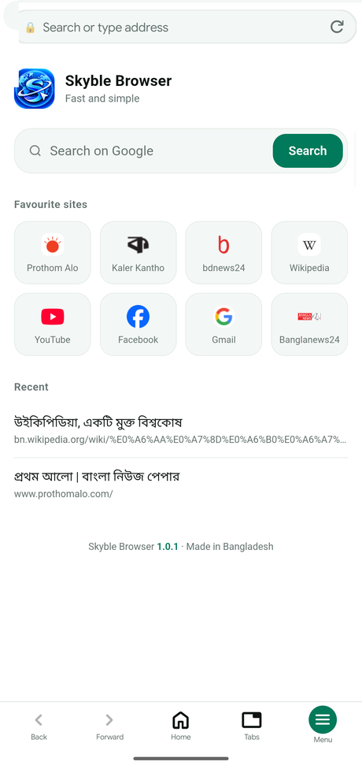
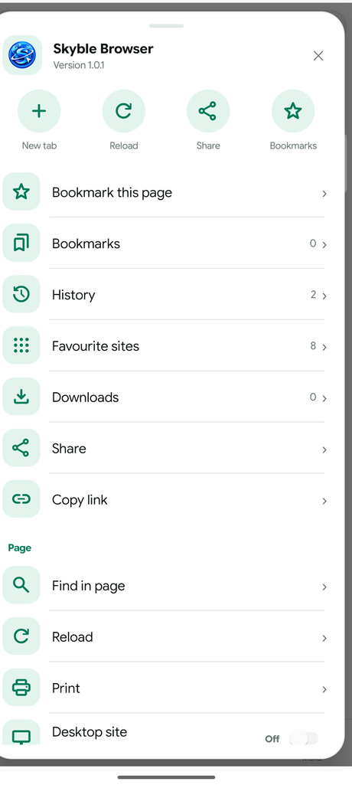
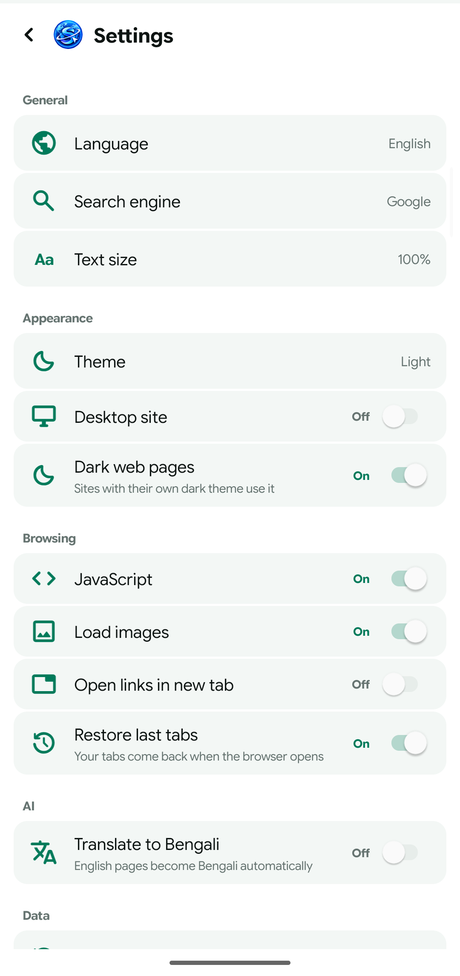
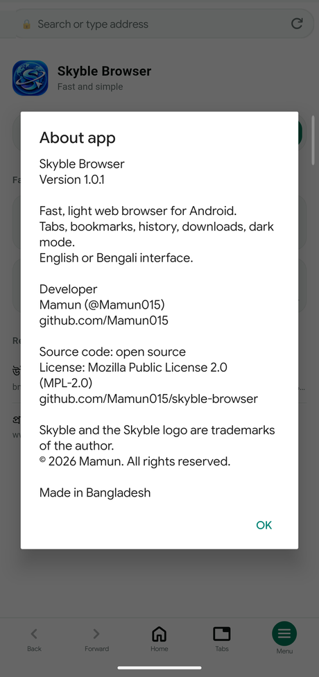

Skyble Browser is a small web browser with real tabs, ad and tracker blocking, downloads, dark mode and both English and Bengali. No ads, no tracking, no account, and the whole app is under one megabyte.
A start page with your favourite sites, a bottom menu within thumb reach, and settings that are only one screen deep.




Everything below is in the free build. No feature is locked, nothing asks for an account.
Each tab keeps its own history, and your open tabs come back when you reopen the app.
Known advertising and tracking hosts are blocked before they load. No analytics, no telemetry, no advertising SDK.
Follow the system, stay light, stay dark, or force every page dark. Sites with their own dark theme keep it.
English interface by default, a full Bengali interface one tap away, plus optional translation of English pages.
Progress, speed and cancel in one screen. Files land in the phone's normal Downloads folder.
Suggestions from your search engine, plus matches from your own history and bookmarks.
Find in page, print, share a page, copy a link, desktop site mode and a default-browser shortcut.
The app checks its GitHub releases and points you at the new build. Nothing installs without your tap.
No second copy of Chromium. Pages are drawn by the Android System WebView already on your phone.
Skyble does not carry a browser engine. It uses the Android System WebView that ships with your phone and updates through the Play Store. That is why the download is a few hundred kilobytes instead of a hundred megabytes, and why engine security fixes arrive without an app update.
It also means a few things do not work, and it is fair to say so up front:
The full source is on GitHub under the Mozilla Public License 2.0. You can read it, build it, change it and ship your own version.
The name, the icon and the banner are brand assets and are not part of that licence. Forks are asked to use their own name and icon.
No store account needed. The APK is signed with the same key every release, so updates install straight over the previous version.
Needs Android 5.0 or newer. Tested on Android 13 and 14.
Skyble is submitted to F-Droid and is in review. F-Droid compiles the app from source on its own builders and signs it with its own key, so the F-Droid build will be a separate install from the APK above.
Once the listing is live, this page will link to it. Until then, the release page is the only official download.
অ্যান্ড্রয়েডের জন্য হালকা ও দ্রুত ব্রাউজার। এক মেগাবাইটেরও কম, বাংলা ইন্টারফেস, ট্যাব, বিজ্ঞাপন ব্লকার, ডাউনলোড ও রাতের মোড — সব বিনামূল্যে। কোনো বিজ্ঞাপন নেই, কোনো ট্র্যাকিং নেই, অ্যাকাউন্টও লাগে না।
ইনস্টল করতে উপরের Download the APK বাটনে চাপো, ফাইলটি খুলে Install দাও। সেটিংস থেকে ভাষা বাংলা করে নিতে পারবে।
Yes. No ads, no subscription, no account. The source code is published under the Mozilla Public License 2.0.
About 650 KB. There is no bundled browser engine; pages are drawn by the Android System WebView already installed on the phone.
It blocks requests to known advertising and tracking hosts such as doubleclick, googleadservices, taboola, outbrain and adsterra. It is a host blocklist, not a full filter engine, so some ads on some sites still get through.
Yes. The interface is English by default and the Bengali translation is one tap away in Settings. English pages can also be translated to Bengali, off by default.
Google blocks sign-in inside embedded browsers. DRM video and a few banking sites fail for the same reason. These are WebView limits, not app bugs.
Android 5.0 and newer. Updates install over the previous version and keep your bookmarks, history and settings.
Open an issue on GitHub. Say what you did, what you expected and what happened.